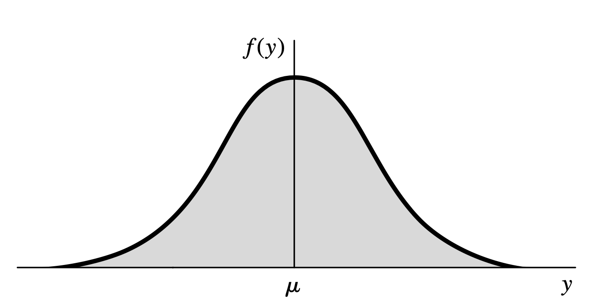
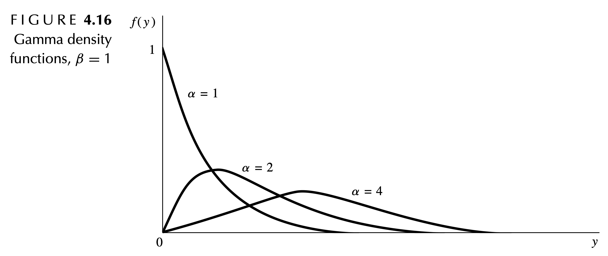

We must understand the underlying probability and random variable theory before moving into the Bayesian world.
We will be covering the following chapters:
Chapter 2: probability theory
Chapter 3: discrete random variables
Chapter 4: continuous random variables
3.1: Basic Definitions
Discrete random variable: a variable that can assume only a finite or countably infinite number of distinct values.
Probability distribution of a random variable: collection of probabilities for each value of the random variable.
Notation:
Uppercase letter (e.g., \(Y\)) denotes a random variable.
Lowercase letter (e.g., \(y\)) denotes a particular value that the random variable may assume.
The specific observed value, \(y\), is not random.
3.2: Probability Distributions for Discrete RV
Probability function for \(\boldsymbol Y\): sum of the the probabilities of all sample points in \(S\) that are assigned the value \(y\)
\(P[Y = y] = p(y)\): the probability that \(Y\) takes on the value \(y\).
Probability distribution for \(\boldsymbol Y\): a formula, table, or graph that provides \(p(y) \ \forall \ y\).
Theorem:
For any discrete probability distribution, the following must be true:
\(0 \le p(y) \le 1 \ \forall \ y\)
\(\sum_y p(y) = 1 \ \forall \ p(y) > 0\).
3.3: Expected Values for Discrete RV
Expected value: Let \(Y\) be a discrete random variable with probability function \(p(y)\). Then the expected value of \(Y\), \(E[Y]\), is defined to be
\[
E(Y) = \sum_{y} y p(y)
\]
When \(p(y)\) is an accurate characterization of the population frequency distribution, then the expected value is the population mean.
\[
E[Y] = \mu
\]
3.3: Expected Values for Discrete RV
Theorem:
Let \(Y\) be a discrete random variable with probability function \(p(y)\) and \(g(Y)\) be a real-valued function of \(Y\) (i.e., a transformed variable). Then the expected value of \(g(Y)\) is given by
\[
E[g(Y)] = \sum_{y} g(y) p(y)
\]
3.3: Expected Values for Discrete RV
Variance: if \(Y\) is a random variable with mean \(E[Y] = \mu\), the variance of a random variable \(Y\) is defined to be the expected value of \((Y-\mu)^2\).
\[
V[Y] = E\left[ (Y-\mu)^2 \right]
\]
If \(p(y)\) is an accurate characterization of the population frequency distribution, then \(V(Y)\) is the population variance,
\[
V[Y] = \sigma^2
\]
Standard deviation: the positive square root of \(V[Y]\).
3.3: Expected Values
The probability distribution for a random variable \(Y\) is given below.
\(y\)
\(p(y)\)
0
1/8
1
1/4
2
3/8
3
1/4
Find the mean of \(Y\).
3.3: Expected Values
The probability distribution for a random variable \(Y\) is given below.
\(y\)
\(p(y)\)
0
1/8
1
1/4
2
3/8
3
1/4
Find the variance and standard deviation of \(Y\).
3.3: Expected Values
Theorem:
Let \(Y\) be a discrete random variable with probability function \(p(y)\) and \(c\) be a constant. Then,
\[E(c) = c\]
Theorem:
Let \(Y\) be a discrete random variable with probability function \(p(y)\), \(g(Y)\) be a function of \(Y\), and \(c\) be a constant. Then,
\[E[cg(Y)] = cE[g(Y)]\]
3.3: Expected Values
Theorem:
Let \(Y\) be a discrete random variable with probability function \(p(y)\), and \(g_1(Y), g_2(Y), ..., g_k(Y)\) be \(k\) functions of \(Y\). Then,
The manufacturer of a dairy drink wishes to compare a new formula (\(B\)) with that of the standard formula (\(A\)). Each of four judges perform a blinded taste test and report which glass he or she most enjoyed. Suppose that the two formulas are equally attractive.
What is the probability distribution?
What is the mean of the distribution?
What is the variance of the distribution?
3.4: Binomial Probability Distribution
The manufacturer of a dairy drink wishes to compare a new formula (\(B\)) with that of the standard formula (\(A\)). Each of four judges perform a blinded taste test and report which glass he or she most enjoyed. Suppose that the two formulas are equally attractive.
Use R to find:
\(P[X = 2]\)
\(P[X > 2]\)
\(P[X < 4]\)
3.4: Binomial Probability Distribution
The manufacturer of a dairy drink wishes to compare a new formula (\(B\)) with that of the standard formula (\(A\)). Each of four judges perform a blinded taste test and report which glass he or she most enjoyed. Suppose that the two formulas are equally attractive.
Use R to find:
\(P[X = 2]\)
dbinom(x =2, size =4, prob =0.5)
[1] 0.375
3.4: Binomial Probability Distribution
The manufacturer of a dairy drink wishes to compare a new formula (\(B\)) with that of the standard formula (\(A\)). Each of four judges perform a blinded taste test and report which glass he or she most enjoyed. Suppose that the two formulas are equally attractive.
The manufacturer of a dairy drink wishes to compare a new formula (\(B\)) with that of the standard formula (\(A\)). Each of four judges perform a blinded taste test and report which glass he or she most enjoyed. Suppose that the two formulas are equally attractive.
Use R to find:
\(P[X < 4] = P[X \le 3]\)
pbinom(q =3, size =4, prob =0.5)
[1] 0.9375
3.8: Poisson Probability Distribution
We often use the Poisson distribution to model count data.
A random variable \(Y\) is said to have a Poisson probability distributioniff
\[
p(y) = \frac{\lambda^y}{y!}e^{-\lambda}, \text{ where } y=0,1,2,..., \text{ and } \lambda > 0
\]
If \(Y\) is a random variable with a Poisson distribution with parameter \(\lambda\), then
Customers arrive at a checkout counter in a department store according to a Poisson distribution at an average of seven per hour.
What is the probability distribution?
What is the mean of the distribution?
What is the variance of the distribution?
3.8: Poisson Probability Distribution
Customers arrive at a checkout counter in a department store according to a Poisson distribution at an average of seven per hour. Use R to find the following probabilities.
No more than three customers arrive.
At least two customers arrive.
Exactly five customers arrive.
3.8: Poisson Probability Distribution
Customers arrive at a checkout counter in a department store according to a Poisson distribution at an average of seven per hour. Use R to find the following probabilities.
No more than three customers arrive.
ppois(q =3, lambda =7)
[1] 0.08176542
3.8: Poisson Probability Distribution
Customers arrive at a checkout counter in a department store according to a Poisson distribution at an average of seven per hour. Use R to find the following probabilities.
At least two customers arrive.
ppois(q =1, lambda =7, lower.tail =FALSE)
[1] 0.9927049
3.8: Poisson Probability Distribution
Customers arrive at a checkout counter in a department store according to a Poisson distribution at an average of seven per hour. Use R to find the following probabilities.
Exactly five customers arrive.
dpois(x =5, lambda =7)
[1] 0.1277167
4.2: Probability Distributions for Continuous RV
The distribution function of \(Y\) (any random varaible), denoted by \(F(y)\), is such that
\[F(y) = P[Y \le y] \text{ for } -\infty < y < \infty\]
Let \(c\) be a constant and let \(g(Y)\), \(g_1(Y)\), \(g_2(Y)\), …, \(g_k(Y)\) be functions of a continuous random variable, \(Y\). Then the following results hold:
An industrial psychologist has determined that it takes a worker between 9 and 15 minutes to complete a task on an automobile assembly line. If the time to complete the task is uniformly distributed over the interval \(9 \le y \le 15\), then determine:
The probability distribution.
The mean of the distribution.
The variance and standard deviation of the distribution.
4.4: Uniform Probability Distribution
We can use R to find information related to the uniform distribution:
An industrial psychologist has determined that it takes a worker between 9 and 15 minutes to complete a task on an automobile assembly line. If the time to complete the task is uniformly distributed over the interval \(9 \le y \le 15\), then determine the following probabilities:
A worker takes fewer than 13 minutes.
A worker takes at least 11 minutes.
A worker takes between 14 and 15 minutes.
4.4: Uniform Probability Distribution
An industrial psychologist has determined that it takes a worker between 9 and 15 minutes to complete a task on an automobile assembly line. If the time to complete the task is uniformly distributed over the interval \(9 \le y \le 15\), then determine the following probabilities:
A worker takes fewer than 13 minutes.
punif(13, 9, 15)
[1] 0.6666667
4.4: Uniform Probability Distribution
An industrial psychologist has determined that it takes a worker between 9 and 15 minutes to complete a task on an automobile assembly line. If the time to complete the task is uniformly distributed over the interval \(9 \le y \le 15\), then determine the following probabilities:
A worker takes at least 11 minutes.
punif(11, 9, 15, lower.tail =TRUE)
[1] 0.3333333
4.4: Uniform Probability Distribution
An industrial psychologist has determined that it takes a worker between 9 and 15 minutes to complete a task on an automobile assembly line. If the time to complete the task is uniformly distributed over the interval \(9 \le y \le 15\), then determine the following probabilities:
A worker takes between 14 and 15 minutes.
punif(15, 9, 15) -punif(14, 9, 15)
[1] 0.1666667
4.5: Normal Probability Distribution
Normal Distribution

4.5: Normal Probability Distribution
A random variable \(Y\) is said to have a normal distributioniff, for \(\sigma > 0\) and \(-\infty < \mu < \infty\),
A random variable \(Y\) is said to have a standard normal distributioniff
\[
Y \sim N(\mu=0,\sigma=1)
\]
The normal distribution is then simplified to
\[
f(y) = \frac{1}{\sqrt{2\pi}} e^{-y^2/2}
\]
Note that in all cases of the normal distribution, we assume \(-\infty < y < \infty\).
4.5: Normal Probability Distribution
When using pnorm(), the default values for mean and sd are 1 and 0.
Thus, if we have the standard normal our R functions simplify to:
\(P[Z \le z]\): pnorm(z)
\(P[Z \ge z]\): pnorm(z, lower.tail = FALSE)
In the functions:
q is the z-score value of interest
lower.tail = TRUE returns \(P[Z \le z]\)
lower.tail = FALSE returns \(P[Z \ge z]\)
4.5: Normal Probability Distribution
A geneticist working for a seed company develops a new carrot for growing in heavy clay soil. After measuring 5000 of these carrots, it can be said that the carrot length, \(Y\), is normally distributed with \(\mu = 11.5\) cm and \(\sigma = 1.15\) cm. Determine
The probability distribution.
The mean of the distribution.
The variance and standard deviation of the distribution.
4.5: Normal Probability Distribution
A geneticist working for a seed company develops a new carrot for growing in heavy clay soil. After measuring 5000 of these carrots, it can be said that the carrot length, \(Y\), is normally distributed with \(\mu = 11.5\) cm and \(\sigma = 1.15\) cm.
What is the probability that a carrot will be between 10 and 13 cm?
What is the probability that a carrot will be less than 9 cm?
What is the probability that a carrot will be 12 cm or larger?
4.5: Normal Probability Distribution
A geneticist working for a seed company develops a new carrot for growing in heavy clay soil. After measuring 5000 of these carrots, it can be said that the carrot length, \(Y\), is normally distributed with \(\mu = 11.5\) cm and \(\sigma = 1.15\) cm.
What is the probability that a carrot will be between 10 and 13 cm?
pnorm(q =13, mean =11.5, sd =1.15) -pnorm(q =10, mean =11.5, sd =1.15)
[1] 0.807885
4.5: Normal Probability Distribution
A geneticist working for a seed company develops a new carrot for growing in heavy clay soil. After measuring 5000 of these carrots, it can be said that the carrot length, \(Y\), is normally distributed with \(\mu = 11.5\) cm and \(\sigma = 1.15\) cm.
What is the probability that a carrot will be less than 9 cm?
pnorm(q =9, mean =11.5, sd =1.15)
[1] 0.01485583
4.5: Normal Probability Distribution
A geneticist working for a seed company develops a new carrot for growing in heavy clay soil. After measuring 5000 of these carrots, it can be said that the carrot length, \(Y\), is normally distributed with \(\mu = 11.5\) cm and \(\sigma = 1.15\) cm.
What is the probability that a carrot will be 12 cm or larger?
pnorm(q =12, mean =11.5, sd =1.15, lower.tail =FALSE)
[1] 0.3318601
4.6: Gamma Probability Distribution
Gamma Distribution

4.6: Gamma Probability Distribution
A random variable \(Y\) is said to have a gamma distribution with parameters \(\alpha > 0\) and \(\beta > 0\)iff,
Alternatively, can parameterize with rate = \(1/\beta\), rate = 1 / scale
lower.tail has two options:
TRUE (default) returns \(P[X \le x]\)
FALSE returns \(P[X \ge x]\)
4.6: Gamma Probability Distribution
Annual incomes for heads of household in an affluent section of a city have approximately a gamma distribution with \(\alpha=32\) and \(\beta=2500\). Determine:
The probability distribution.
The mean of the distribution.
The variance and standard deviation of the distribution.
4.6: Gamma Probability Distribution
Annual incomes for heads of household in an affluent section of a city have approximately a gamma distribution with \(\alpha=32\) and \(\beta=2500\).
What proportion have incomes in excess of $100,000?
What proportion have incomes between $75,000 and $150,000?
4.6: Gamma Probability Distribution
Annual incomes for heads of household in a section of a city have approximately a gamma distribution with \(\alpha=32\) and \(\beta=2500\).
What proportion have incomes in excess of $30,000?
q is the value of \(X\) we are interested in – must be in [0, 1]!
shape1 is the first shape parameter, \(\alpha\)
shape2 is the second shape parameter, \(\beta\)
lower.tail has two options:
TRUE (default) returns \(P[X \le x]\)
FALSE returns \(P[X \ge x]\)
4.7: Beta Probability Distribution
In a survey of cupcake preferences, 8 respondents liked the new cupcake flavor and 2 did not. We will model the proportion of all respondents who would like the cupcake flavor using a Beta distribution with \(\alpha = 8\) and \(\beta = 2\). Determine:
The probability distribution.
The mean of the distribution.
The variance and standard deviation of the distribution.
4.7: Beta Probability Distribution
In a survey of cupcake preferences, 8 respondents liked the new cupcake flavor and 2 did not. We will model the proportion of all respondents who would like the cupcake flavor using a Beta distribution with \(\alpha = 8\) and \(\beta = 2\). What is the probability that:
fewer than 60% of respondents like the new flavor?
more than 90% of respondents like the new flavor?
somewhere between 70% and 90% of respondents like the new flavor?
4.7: Beta Probability Distribution
In a survey of cupcake preferences, 8 respondents liked the new cupcake flavor and 2 did not. We will model the proportion of all respondents who would like the cupcake flavor using a Beta distribution with \(\alpha = 8\) and \(\beta = 2\). What is the probability that:
fewer than 60% of respondents like the new flavor?
pbeta(q =0.6, shape1 =8, shape2 =2)
[1] 0.07054387
4.7: Beta Probability Distribution
In a survey of cupcake preferences, 8 respondents liked the new cupcake flavor and 2 did not. We will model the proportion of all respondents who would like the cupcake flavor using a Beta distribution with \(\alpha = 8\) and \(\beta = 2\). What is the probability that:
In a survey of cupcake preferences, 8 respondents liked the new cupcake flavor and 2 did not. We will model the proportion of all respondents who would like the cupcake flavor using a Beta distribution with \(\alpha = 8\) and \(\beta = 2\). What is the probability that:
somewhere between 70% and 90% of respondents like the new flavor?